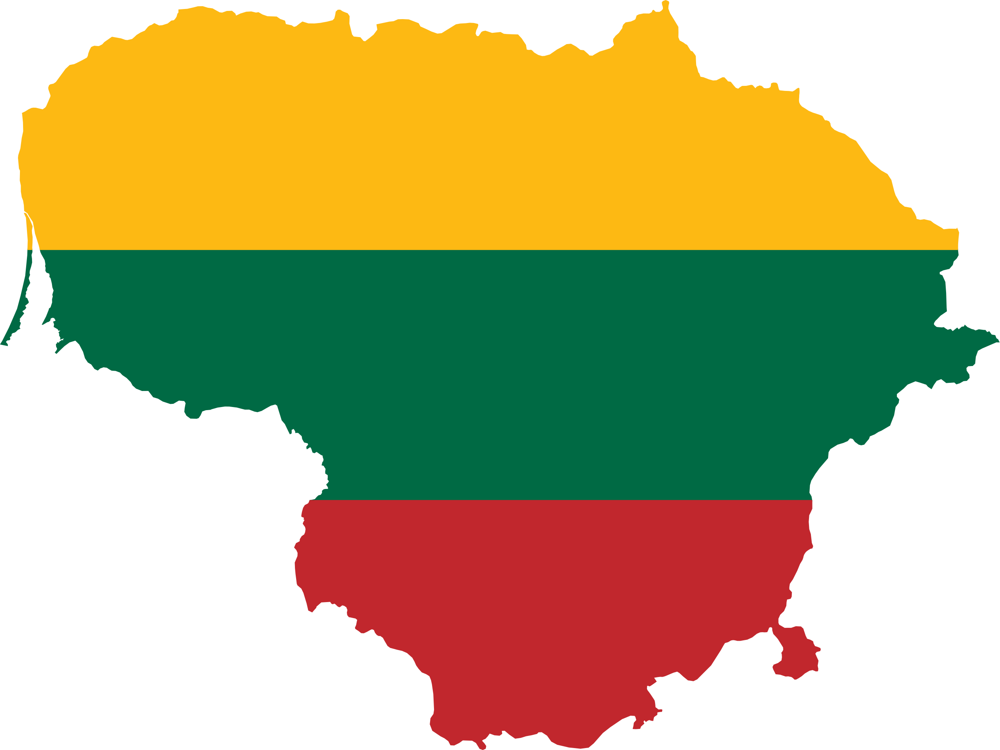

Destination Lithuania, an Eastern European country with a coastline at the Baltic Sea in west. It is the largest and most populous of the three Baltic states. The country is bordered by Belarus, Latvia, Poland, and Russia (Kaliningrad) and it shares a maritime border with Sweden. More information here
Lithuania
Information on Lithuania
Lithuania, country of northeastern Europe, the southernmost and largest of the three Baltic states. Lithuania was a powerful empire that dominated much of eastern Europe in the 14th–16th centuries before becoming part of the Polish-Lithuanian confederation for the next two centuries. Aside from a brief period of independence from 1918 to 1940, Lithuania was occupied by Russia beginning in 1795, was controlled by Germany for a brief period during World War II, and was incorporated into the U.S.S.R. in 1944 as one of its constituent republics. On March 11, 1990, Lithuania declared its independence by a unanimous vote of its newly elected parliament. The new Soviet parliament acknowledged Lithuania’s independence on September 6, 1991. Lithuania was admitted into the European Union (EU) and the North Atlantic Treaty Organization in 2004. The capital is Vilnius.
More Information